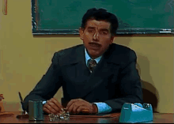
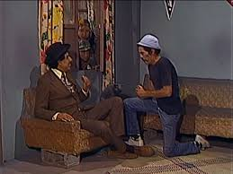

Um dia, estava na escola, no segundo ano do ensino médio, então entra um professor muito estranho, ele é novo

Ele olha para você e faz uma pergunta de matemática, quanto é 7x9

Ele percebe e manda você ir na frente dar aula no lugar dele
Ele fica impressionado com sua inteligência

O professor fala que você está reprovado na matéria dele

Você conta uma piada e a sala toda cai na gargalhada
Ele resolve seguir a aula, apesar da sua birra

Ele te convida para ajudá-lo na aula

Ele diz que dá nota de participação

Você vira melhor amigo do professor
Ele fica confuso, mas entende que você não quer se expor

A história acaba com uma amizade pra vida
Ele entende que você é timido mas com o tempo você se solta e vocês viram amigos